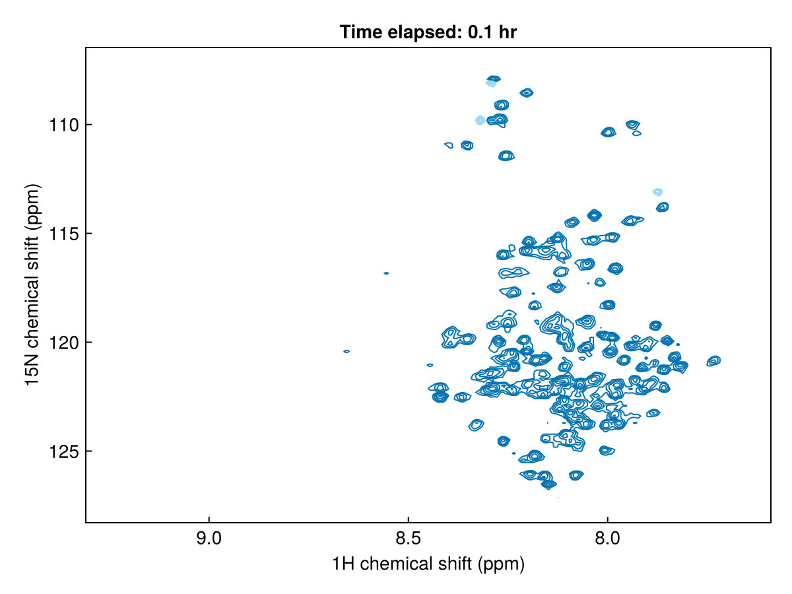
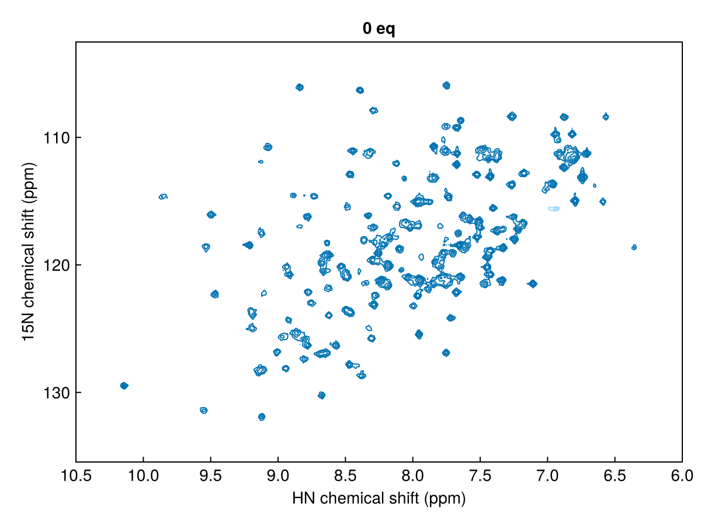
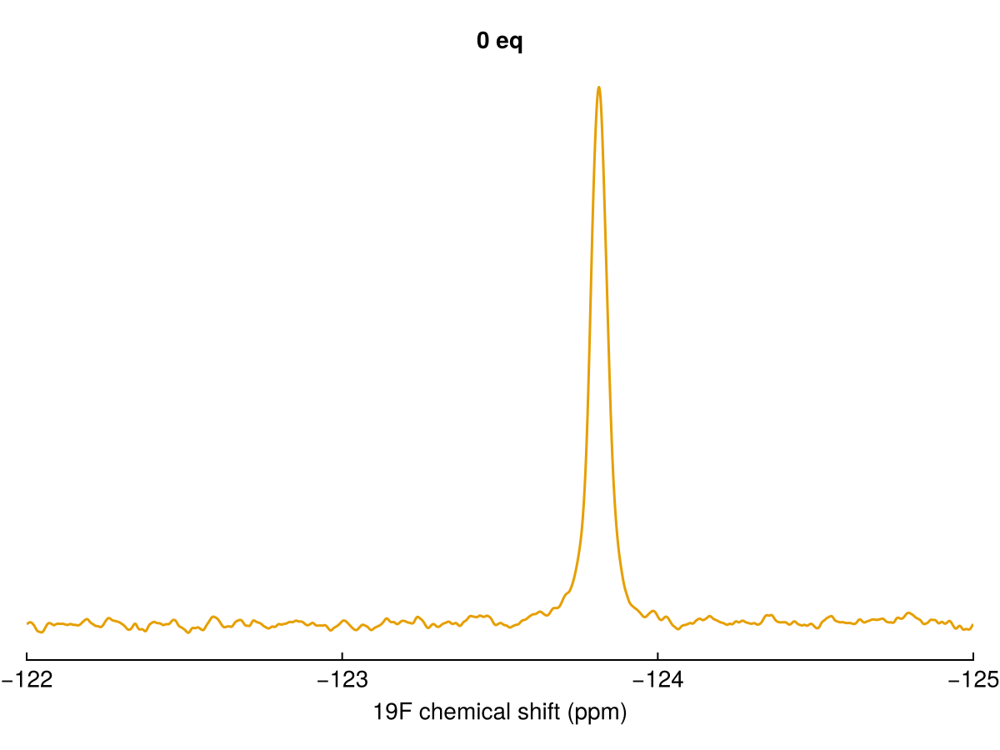

Animate plots
Makie's record function makes animations, saving directly to GIF or video formats. It calls a function once per frame; inside it, clear the axis with empty! and redraw with nmrplot!.
For interactive use with GLMakie, the same record approach works, or you can update the plot live by calling nmrplot! in response to user events.
Phosphorylation kinetics
First, load in some data. This pseudo-3D kinetic data — a series of 1H,15N SOFAST-HMQC spectra — shows the progressive phosphorylation of cJun by JNK1 kinase. Read more about the paper here: Waudby et al. Nat Commun (2022).
using NMRTools, CairoMakie
spec = exampledata("pseudo3D_kinetics")The data have been processed in Topspin using ftnd 3 and ftnd 2, so that the final dimension of the 3D represents the phosphorylation time. Each 2D plane took 2 minutes to acquire, and there was an initial delay of 4 min between adding the kinase and recording the first free induction decay. We need to calculate a list of times from this information, that we can use to label the animation:
# get number of time points
nt = size(spec, 3)
# calculate a list of measurement times
# experiment was recorded with 2 min per spectrum, plus initial dead-time of 4 min
tmin = LinRange(0, 2*(nt-1), nt) .+ 4
thr = tmin / 60256-element LinRange{Float64, Int64}:
0.0666667, 0.1, 0.133333, 0.166667, 0.2, …, 8.46667, 8.5, 8.53333, 8.56667Now we can generate the animation, by looping over each point in the time series with Makie's record function, then saving as an animated gif.
ref = spec[:, :, 1]
fig, ax, _ = nmrplot(ref; normalize=ref)
record(fig, "kinetics.gif", 1:nt; framerate=30) do i
empty!(ax)
ax.title[] = "Time elapsed: $(round(thr[i], digits=1)) hr"
nmrplot!(ax, spec[:, :, i]; normalize=ref)
end
2D titration
First, load in some data — a series of 1H,15N HSQC spectra from a titration experiment:
spectra2d = exampledata("2D_HN_titration")Now loop over the spectra to produce the animation:
ref = spectra2d[1]
fig, ax, _ = nmrplot(ref; normalize=ref, xlims=(6, 10.5))
record(fig, "titration.gif", spectra2d; framerate=8) do s
empty!(ax)
ax.title[] = label(s)
nmrplot!(ax, s; normalize=ref)
end
The normalize=ref parameter scales all spectra relative to the reference spectrum, defined as the first spectrum in the titration series. This ensures that contour levels are directly comparable across the different spectra. This normalization automatically compensates for differences in acquisition parameters such as number of scans and receiver gain that would otherwise affect absolute intensities.
1D titration
The same approach works for 1D spectra:
spectra1d = exampledata("1D_19F_titration")
fig, ax, _ = nmrplot(spectra1d[1]; xlims=(-122, -125), title="")
record(fig, "titration1d.gif", spectra1d; framerate=4) do s
empty!(ax)
nmrplot!(ax, s)
ax.title[] = label(s)
end